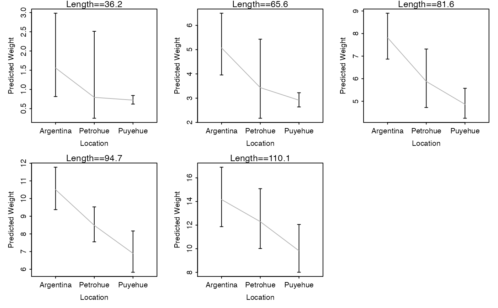
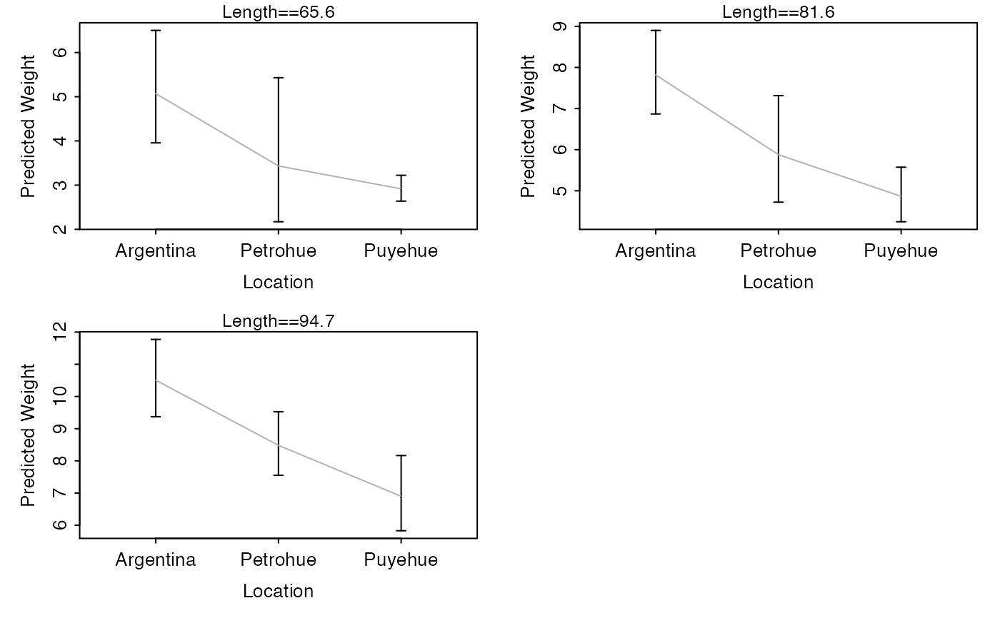
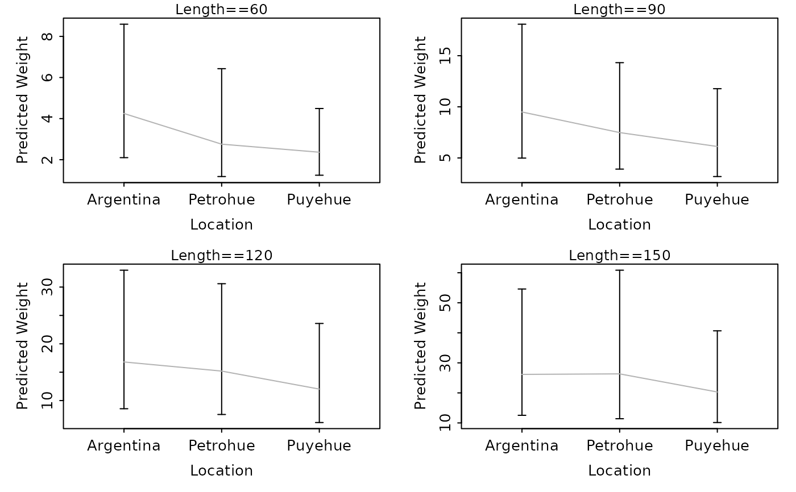
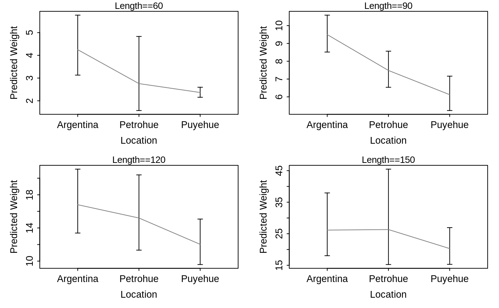

Constructs plots of predicted weights at given lengths among different groups.
Source:R/lwCompPreds.R
lwCompPreds.RdConstructs plots of predicted weights at given lengths among different groups. These plots allow the user to explore differences in predicted weights at a variety of lengths when the weight-length relationship is not the same across a variety of groups.
lwCompPreds( object, lens = NULL, qlens = c(0.05, 0.25, 0.5, 0.75, 0.95), qlens.dec = 1, base = exp(1), interval = c("confidence", "prediction", "both"), center.value = 0, lwd = 1, connect.preds = TRUE, show.preds = FALSE, col.connect = "gray50", ylim = NULL, main.pre = "Length==", cex.main = 0.8, xlab = "Groups", ylab = "Predicted Weight", yaxs = "r", rows = round(sqrt(num)), cols = ceiling(sqrt(num)) )
Arguments
| object | An |
|---|---|
| lens | A numeric vector that indicates the lengths at which the weights should be predicted. |
| qlens | A numeric vector that indicates the quantiles of lengths at which weights should be predicted. This is ignored if |
| qlens.dec | A single numeric that identifies the decimal place that the lengths derived from |
| base | A single positive numeric value that indicates the base of the logarithm used in the |
| interval | A single string that indicates whether to plot confidence ( |
| center.value | A single numeric value that indicates the log length used if the log length data was centered when constructing |
| lwd | A single numeric that indicates the line width to be used for the confidence and prediction interval lines (if not |
| connect.preds | A logical that indicates whether the predicted values should be connected with a line across groups or not. |
| show.preds | A logical that indicates whether the predicted values should be plotted with a point for each group or not. |
| col.connect | A color to use for the line that connects the predicted values (if |
| ylim | A numeric vector of length two that indicates the limits of the y-axis to be used for each plot. If null then limits will be chosen for each graph individually. |
| main.pre | A character string to be used as a prefix for the main title. See details. |
| cex.main | A numeric value for the character expansion of the main title. See details. |
| xlab | A single string for labeling the x-axis. |
| ylab | A single string for labeling the y-axis. |
| yaxs | A single string that indicates how the y-axis is formed. See |
| rows | A single numeric that contains the number of rows to use on the graphic. |
| cols | A single numeric that contains the number of columns to use on the graphic. |
Value
None. However, a plot is produced.
IFAR Chapter
7-Weight-Length.
References
Ogle, D.H. 2016. Introductory Fisheries Analyses with R. Chapman & Hall/CRC, Boca Raton, FL.
Examples
# add log length and weight data to ChinookArg data ChinookArg$logtl <- log(ChinookArg$tl) ChinookArg$logwt <- log(ChinookArg$w) # fit model to assess equality of slopes lm1 <- lm(logwt~logtl*loc,data=ChinookArg) anova(lm1)#> Analysis of Variance Table #> #> Response: logwt #> Df Sum Sq Mean Sq F value Pr(>F) #> logtl 1 92.083 92.083 898.4819 < 2.2e-16 *** #> loc 2 2.634 1.317 12.8526 1.005e-05 *** #> logtl:loc 2 0.101 0.051 0.4932 0.612 #> Residuals 106 10.864 0.102 #> --- #> Signif. codes: 0 ‘***’ 0.001 ‘**’ 0.01 ‘*’ 0.05 ‘.’ 0.1 ‘ ’ 1# set graphing parameters so that the plots will look decent op <- par(mar=c(3.5,3.5,1,1),mgp=c(1.8,0.4,0),tcl=-0.2) # show predicted weights (w/ CI) at the default quantile lengths for each year lwCompPreds(lm1,xlab="Location")# show predicted weights (w/ CI) at the quartile lengths for each year lwCompPreds(lm1,xlab="Location",qlens=c(0.25,0.5,0.75))# show predicted weights (w/ CI) at certain lengths for each year lwCompPreds(lm1,xlab="Location",lens=c(60,90,120,150))# show predicted weights (w/ just PI) at certain lengths for each year lwCompPreds(lm1,xlab="Location",lens=c(60,90,120,150),interval="prediction")# show predicted weights (w/ CI and PI) at certain lengths for each year lwCompPreds(lm1,xlab="Location",lens=c(60,90,120,150),interval="both")# show predicted weights (w/ CI and points at the prediction) at certain lengths for each year lwCompPreds(lm1,xlab="Location",lens=c(60,90,120,150),show.preds=TRUE)# show predicted weights (w/ CI but don't connect means) at certain lengths for each year lwCompPreds(lm1,xlab="Location",lens=c(60,90,120,150),connect.preds=FALSE,show.preds=TRUE)# fit model with centered data mn.logtl <- mean(ChinookArg$logtl,na.rm=TRUE) ChinookArg$clogtl <- ChinookArg$logtl-mn.logtl lm2 <- lm(logwt~clogtl*loc,data=ChinookArg) lwCompPreds(lm2,xlab="Location",center.value=mn.logtl)# fit model with a different base (plot should be the same as the first example) ChinookArg$logtl <- log10(ChinookArg$tl) ChinookArg$logwt <- log10(ChinookArg$w) lm1 <- lm(logwt~logtl*loc,data=ChinookArg) lwCompPreds(lm1,base=10,xlab="Location")if (interactive()) { # should give error, does not work for only a simple linear regression lm2 <- lm(logwt~logtl,data=ChinookArg) lwCompPreds(lm2) # or a one-way ANOVA lm3 <- lm(logwt~loc,data=ChinookArg) lwCompPreds(lm3) } ## return graphing parameters to original state par(op)